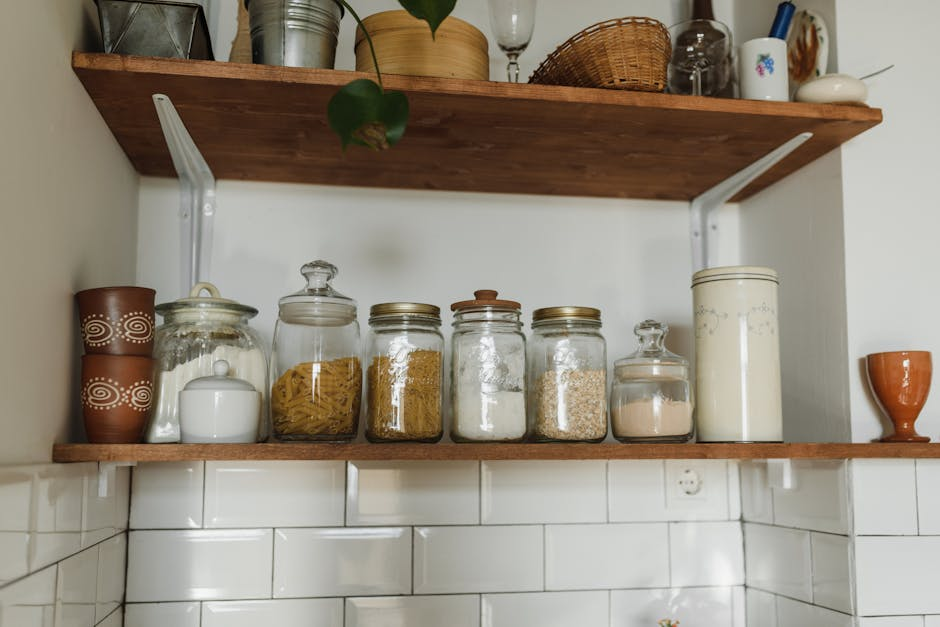
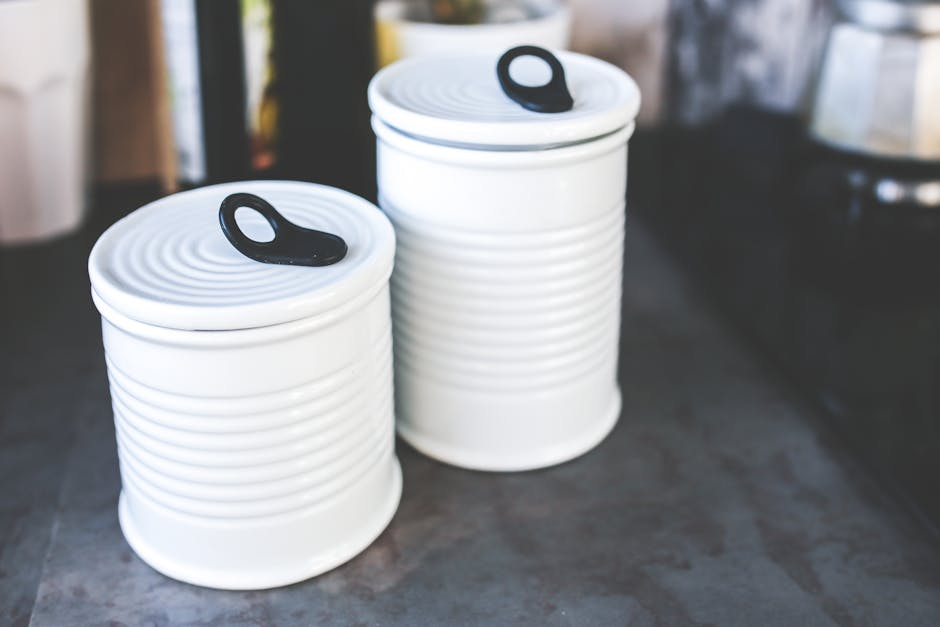

This post contains affiliate links, which means I may earn a small commission if you purchase through my links — at no extra cost to you. I only recommend things I've personally used and actually like.
My kitchen used to be the room I apologized for. Not because it was dirty — because it was chaos. Every drawer a mystery. Every cabinet a small avalanche waiting to happen. Then I spent one focused weekend on pantry organization and honest-to-goodness, I cook differently now.
Here's what I actually bought, what it replaced, and whether it was worth the money.

Why Most Kitchens Feel Messy Even When They're Clean
The real issue isn't that we're bad at tidying. It's that most kitchens aren't set up with systems — they're just set up with space. Stuff gets shoved somewhere loosely logical and then slowly migrates until nothing makes sense anymore. I had six spatulas and could find zero of them on a Tuesday night.
The fix isn't cleaning more often. It's making everything have one specific home it actually wants to live in. Good kitchen storage does that work for you, quietly, every single day.
The Organizers I Actually Use (And Won't Stop Talking About)
1. Clear Stackable Pantry Bins
Before: my pantry shelves were a graveyard of half-open bags, mystery cans shoved sideways, and snacks I forgot I owned. After: categories. Actual, visible categories. Snacks in one bin. Baking supplies in another. Canned goods lined up where I can read every label without pulling anything out.
Clear bins are the single highest-ROI purchase in kitchen organization. You stop buying duplicates because you can see what you have. My grocery bill dropped slightly and I feel like a person with her life together every time I open that door.
- Look for bins with handles — you'll pull them out constantly
- Uniform sizing matters more than you think; mixed sizes look cluttered fast
- Deep bins for snacks, shallow bins for packets and seasoning pouches
2. Lazy Susans (Yes, Still. Always.)
I resisted these for years because they felt like something from a 1987 kitchen renovation. Wrong. A turntable in a corner cabinet or on a pantry shelf is genuinely life-changing for condiments, oils, and spices. You stop losing things in the back of the cabinet because everything spins to the front.
I have one in my pantry for oils and vinegars, one under the sink for cleaning supplies, and a small one in the fridge for condiments. Every single one earns its keep daily.
3. Drawer Dividers for Utensils
The utensil drawer is where kitchen chaos goes to multiply. Expandable bamboo dividers were the answer for me — they adjust to your drawer width, look genuinely pretty, and keep zones intact. Spatulas with spatulas. Measuring spoons with measuring spoons. I know that sounds basic, but I cannot overstate how much faster cooking feels when you're not rummaging.
One honest caveat here: bamboo dividers don't do well if your drawer gets wet often. If you tend to toss damp spoons in there (no judgment), go for the plastic-coated adjustable versions instead. They're less pretty but they'll last longer.

4. Over-the-Door Organizers
Cabinet doors are completely wasted real estate in most kitchens. An over-the-door rack on the inside of your pantry door or a deep cabinet can hold cutting boards, pot lids, aluminum foil boxes, or a whole row of spices — none of which need to take up shelf space.
This is especially worth it in smaller kitchens where every square inch counts. I added one to my pantry door and suddenly had a full extra shelf's worth of space back.
5. Uniform Canisters for Dry Goods
This one is partly aesthetic, I won't pretend otherwise. But switching from a mix of half-open bags and mismatched containers to a set of matching airtight canisters did two things: my flour and oats actually stay fresh longer, and opening my pantry makes me happy instead of stressed. Both matter.
- Measure your shelves before buying — canister sets look great in photos but can be bigger than expected
- Label them, even if it feels obvious; you'll thank yourself when someone else is helping in the kitchen
- Airtight seals are non-negotiable if you bake even occasionally
6. A Pot and Pan Organizer (The One I Wish I'd Bought Sooner)
For years I stacked my pans directly on top of each other and then spent thirty seconds doing a pan Jenga every time I needed to cook something. A vertical pot organizer that lets pans stand on their sides took up the same cabinet footprint and made every single pan accessible in one move. One move. I think about how many collective hours I've gotten back.
Adjustable dividers are the way to go here since pan sizes vary so much — fixed slots often don't quite fit real-world cookware.
How I Actually Approached the Whole Declutter Process
I didn't overhaul everything in one day. I did it in zones over a weekend, which made it feel manageable instead of overwhelming. Here's roughly how I went about it:
- Pull everything out of one zone at a time — don't start on the pantry and then wander into the utensil drawer. Finish what you start.
- Toss the obvious stuff first — expired spices, duplicate tools you never reach for, the garlic press you've used once in four years.
- Group what's left by how you actually use it, not by category logic. If you always use your cutting board next to your knives, they should live near each other.
- Measure before you buy organizers. I cannot stress this enough. I've returned more bins than I'd like to admit because I eyeballed it.
- Install, load, live with it for a week before deciding something isn't working. It takes a few days to build new muscle memory.
The before and after isn't just visual, though it is very satisfying visually. The real shift is functional. Cooking on a weeknight when you're tired feels different when the kitchen is working with you instead of against you.

What's Actually Worth Splurging On vs. Saving
Not everything needs to be an investment. Here's my honest take:
- Splurge on: canisters (you'll look at them every day), the lazy Susan (used constantly), drawer dividers (sets the tone for the whole kitchen)
- Save on: pantry bins (clear and functional is all you need — brand doesn't matter much), over-the-door racks (basic wire ones work perfectly fine)
- Skip entirely: overly specialized organizers for one specific item. They sound clever in the moment and end up taking up space.
Where to Start If Your Kitchen Feels Overwhelming Right Now
Start with the pantry. Specifically, the shelf you look at most. Get three clear bins, put like things together, and just see how it feels. That small win is usually enough momentum to keep going.
I've rounded up all the specific kitchen organizers I mentioned — the exact bins, canisters, dividers, and racks I actually have in my kitchen right now — into one easy list. If you're ready to actually do this, shop my kitchen organization picks here. Everything's linked and I've noted which are worth the splurge.
I've reorganized my kitchen three times in the last ten years, and this last time finally stuck — because I stopped trying to find a place for everything I owned and started being honest about what actually belongs in a kitchen that works for my life. Turns out it's a lot less stuff, stored a lot more intentionally. Feels good in there now.